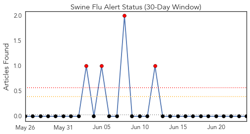
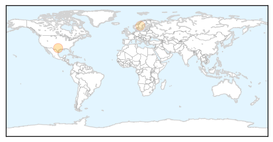
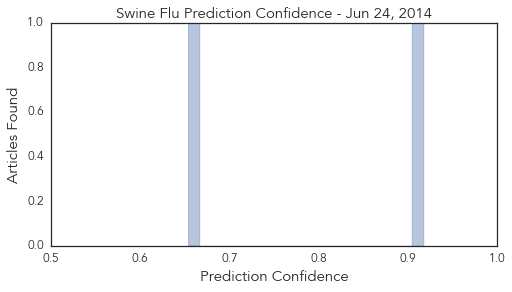
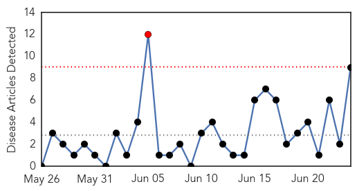
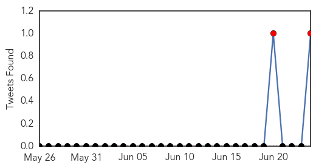
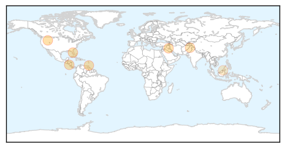
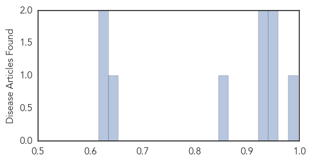

Swine Flu
30-Day Web Trend
0 alerts, 0 warnings

30-Day Twitter Trend
4 alerts, 0 warnings

Article Locations
Article Confidences
Top Articles:
Top Tweets:
-
No tweets found for Jun 24, 2014
Dengue Fever
30-Day Web Trend
1 alerts, 0 warnings

30-Day Twitter Trend
3 alerts, 0 warnings

Article Locations
Article Confidences
Top Articles:
- 0.997
- Thrissur district witnesses spurt in diseases despite break in rain
- 0.949
- Illness Borne By Mosquitoes Reported in Polk County
- 0.946
- Trinidad Express Newspapers:
- 0.931
- Sustainable Sciences Institute (SSI) Awarded $1 Million to Battle Growing Threat to Global Public Health: Mosquito-borne Dengue Virus
- 0.929
- Visitor from Sri Lanka infected with dengue
- 0.849
- Special ward in Timergara hospital to be setup to combat dengue virus
- 0.645
- Hospitals recording high number of dengue cases - Nation
- 0.632
- Patients treated with care despite congestion at hospital - Nation
- 0.616
- Dry Spell Could See A Drop In Dengue Cases
Top Tweets:
- 0.728
- Carla Saleh: 2014ASV Insects are vectors for several emerging diseases, Chikungunya, Dengue, west nile, blue tongue virus etc.